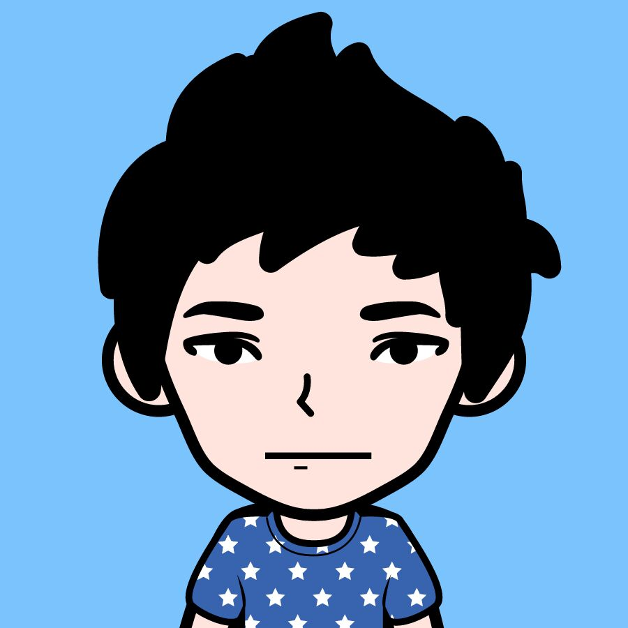

- 一只跃跃欲试的前端攻城狮
- : PengYi
- : NanChang
- : 小易的博客(技术向)
- : batmanyp@foxmail.com
CI/CD 快速掌握指南 - 前端面试必备
🚀 CI/CD 快速掌握指南
前端面试必备 · 2-3天快速上手 · 实战导向
什么是 CI/CD？
CI（持续集成）Continuous Integration
代码提交后自动构建、自动测试，确保新代码不会破坏现有功能。
🎯 目标：快速发现问题
🎯 目标：快速发现问题
CD（持续部署）Continuous Deployment
通过测试的代码自动部署到生产环境，无需人工干预。
🎯 目标：加速交付
🎯 目标：加速交付
CD（持续交付）Continuous Delivery
代码准备好可以部署，但需要人工确认才部署到生产环境。
典型 CI/CD 流程
开发者 push 代码
↓
触发 CI Pipeline
↓
1️⃣ 拉取代码 (Checkout)
↓
2️⃣ 安装依赖 (npm ci)
↓
3️⃣ 代码检查 (Lint)
↓
4️⃣ 运行测试 (Test)
↓
5️⃣ 构建项目 (Build)
↓
6️⃣ 上传产物 (Artifact)
↓
7️⃣ 部署到服务器 (Deploy) ← CD 阶段
💡 核心理念：自动化一切能自动化的步骤，减少人为错误，提高交付速度。
📌 必须记住的核心术语
- Pipeline（流水线）：整个自动化流程的定义
- Job（任务）：Pipeline 中的一个阶段（如 test、build、deploy）
- Step（步骤）：Job 中的具体操作步骤
- Runner/Agent（执行器）：运行 Job 的机器（Linux/Mac/Windows）
- Artifact（产物）：构建输出的文件（如 dist/ 目录）
- Cache（缓存）：缓存 node_modules 等加速构建
常见工具对比 高频考点
GitHub Actions ⭐ 推荐
✅ 优先学这个！免费、易用、与 GitHub 深度集成
适合：开源项目、个人项目、中小团队
适合：开源项目、个人项目、中小团队
GitLab CI
配置文件：.gitlab-ci.yml
适合：企业私有仓库
适合：企业私有仓库
Jenkins
⚠️ 老牌工具，配置复杂但灵活
适合：大型企业、复杂流程
适合：大型企业、复杂流程
🎯 面试必背：CI/CD 的好处
- 快速反馈：代码有问题几分钟内就能发现
- 减少人工错误：自动化代替手动部署
- 提高交付频率：从每周发布变成每天发布
- 降低风险：小步快跑，每次变更很小
- 团队协作：统一的构建和部署标准
GitHub Actions 基础结构 必须会写
# 文件位置: .github/workflows/ci.yml
name: CI Pipeline
# 触发条件
on:
push:
branches: [ main, develop ]
pull_request:
branches: [ main ]
# 任务定义
jobs:
test-and-build:
runs-on: ubuntu-latest
steps:
- name: Checkout code
uses: actions/checkout@v4
- name: Setup Node.js
uses: actions/setup-node@v4
with:
node-version: '18'
cache: 'npm'
- name: Install dependencies
run: npm ci
- name: Run linter
run: npm run lint
- name: Run tests
run: npm test
- name: Build project
run: npm run build
关键语法速记
触发时机 (on)
push - 代码推送时触发
pull_request - PR 创建/更新时触发
schedule - 定时任务（cron 表达式）
pull_request - PR 创建/更新时触发
schedule - 定时任务（cron 表达式）
执行命令 (run vs uses)
run: 直接执行 shell 命令
uses: 使用现成的 Action（如 checkout、setup-node）
uses: 使用现成的 Action（如 checkout、setup-node）
缓存优化
在 setup-node 中加 cache: 'npm'
自动缓存 node_modules，下次构建快 50%+
自动缓存 node_modules，下次构建快 50%+
💡 学习技巧：直接在 GitHub 上创建一个测试仓库，添加这个配置文件，push 代码就能看到效果！
高频面试题 & 回答模板
Q1: 你们项目的 CI/CD 流程是怎样的？
回答模板：
"我们使用 GitHub Actions，配置了自动化流水线：
1. 代码 push 或提 PR 时自动触发
2. 先跑 ESLint 做代码规范检查
3. 然后运行单元测试，覆盖率要求 80%+
4. 测试通过后构建生产包
5. 最后自动部署到测试环境，主分支还会部署到生产环境
这样能保证代码质量，也能快速交付功能。"
"我们使用 GitHub Actions，配置了自动化流水线：
1. 代码 push 或提 PR 时自动触发
2. 先跑 ESLint 做代码规范检查
3. 然后运行单元测试，覆盖率要求 80%+
4. 测试通过后构建生产包
5. 最后自动部署到测试环境，主分支还会部署到生产环境
这样能保证代码质量，也能快速交付功能。"
Q2: 为什么需要 CI/CD？
回答要点：
• 手动部署容易出错，自动化更可靠
• 能快速发现 bug，不用等到上线才发现问题
• 提高团队效率，开发者专注于写代码而不是运维
• 支持频繁迭代，符合敏捷开发理念
• 手动部署容易出错，自动化更可靠
• 能快速发现 bug，不用等到上线才发现问题
• 提高团队效率，开发者专注于写代码而不是运维
• 支持频繁迭代，符合敏捷开发理念
Q3: 如果 CI 构建失败了怎么办？
回答思路：
1. 查看 GitHub Actions 的日志，定位失败步骤
2. 如果是测试失败，本地复现并修复
3. 如果是环境问题，检查依赖版本或 Runner 配置
4. 修复后重新 push 触发构建
5. 重要：构建失败时不应该合并代码到主分支
1. 查看 GitHub Actions 的日志，定位失败步骤
2. 如果是测试失败，本地复现并修复
3. 如果是环境问题，检查依赖版本或 Runner 配置
4. 修复后重新 push 触发构建
5. 重要：构建失败时不应该合并代码到主分支
Q4: 如何优化 CI/CD 的速度？
优化手段：
• 缓存 node_modules（最重要）
• 并行执行独立的 Job（如测试和构建并行）
• 只测试变化的文件（monorepo 场景）
• 使用更快的 Runner（如 self-hosted）
• 减少不必要的步骤，保持 Pipeline 精简
• 缓存 node_modules（最重要）
• 并行执行独立的 Job（如测试和构建并行）
• 只测试变化的文件（monorepo 场景）
• 使用更快的 Runner（如 self-hosted）
• 减少不必要的步骤，保持 Pipeline 精简
🎯 3 天学习计划
- Day 1: 理解概念 + 手写一个 ci.yml 文件
- Day 2: 在真实项目中配置 GitHub Actions
- Day 3: 练习面试问答 + 了解 GitLab CI 差异
💡 加分项：如果能提到"我们用 CI/CD 把部署时间从 30 分钟缩短到 5 分钟"，面试官会眼前一亮！
<< 返回
最近访客: